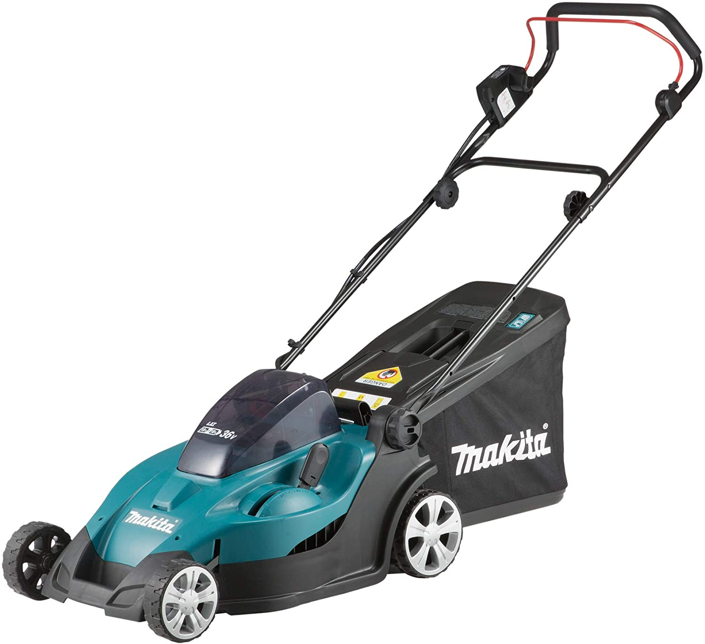

Makita DLM431Z
El Makita DLM431Z es un cortacésped a batería de 36 V, ideal para jardines de tamaño medio. Con un ancho de corte de 43 cm, este cortacésped ofrece un rendimiento potente y eficiente, permitiéndote cuidar tu jardín sin preocuparte por los cables o el ruido. Además, el DLM431Z es compatible con baterías de litio-ion de 18 V, facilitando su uso con otras herramientas Makita.
El sistema de doble palanca de ajuste de altura de corte del Makita DLM431Z permite adaptar el corte a tus necesidades específicas, con 13 posiciones diferentes de altura de corte entre 20 y 75 mm. Su diseño ligero y las ruedas con rodamientos de bolas aseguran una maniobrabilidad fácil y un transporte cómodo.
No esperes más y adquiere tu Makita DLM431Z para disfrutar de un jardín perfecto sin esfuerzo.
Comprar ahora